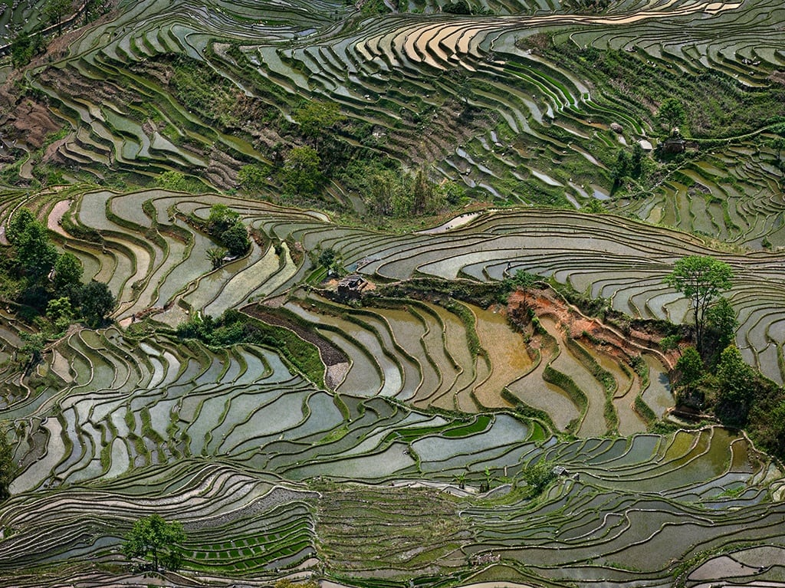
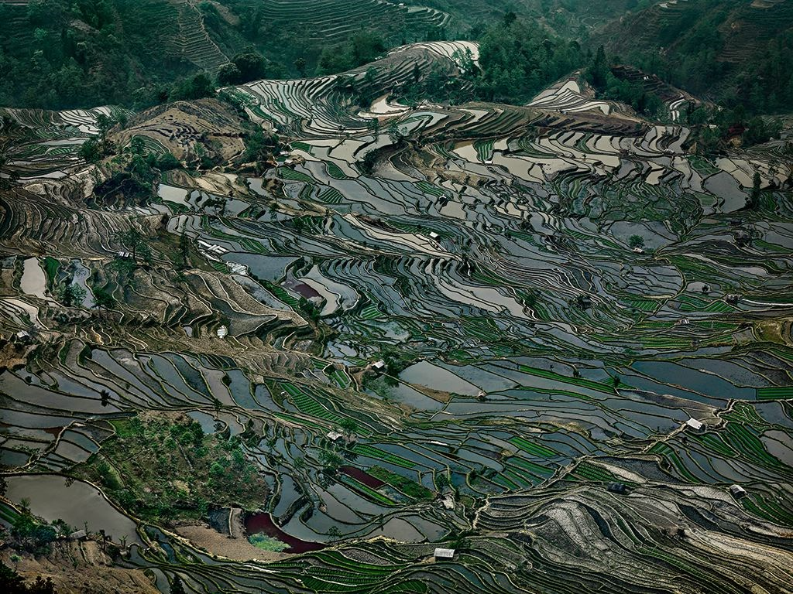
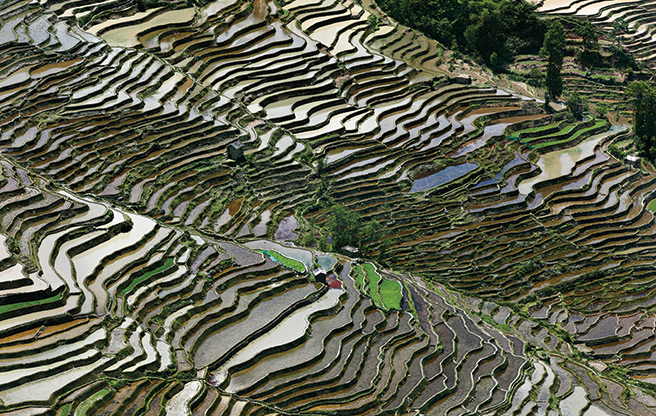
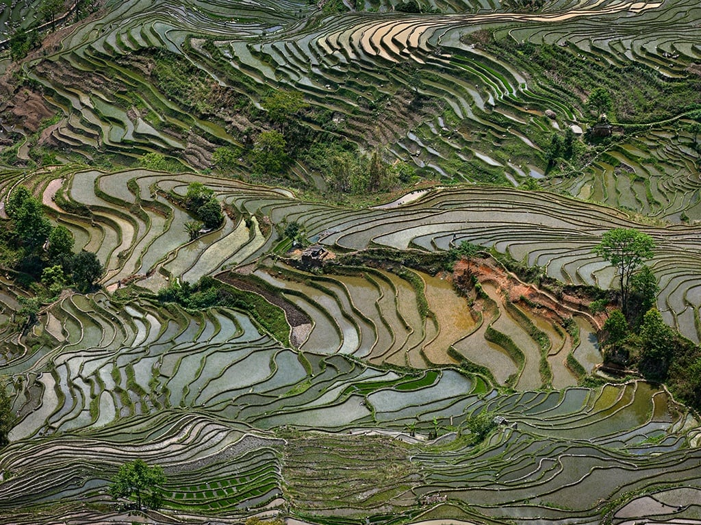
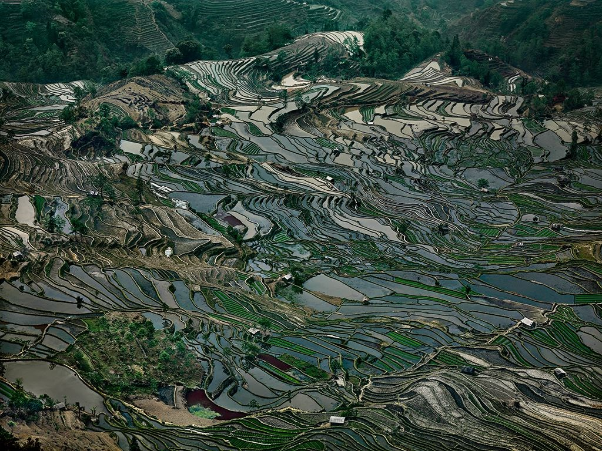
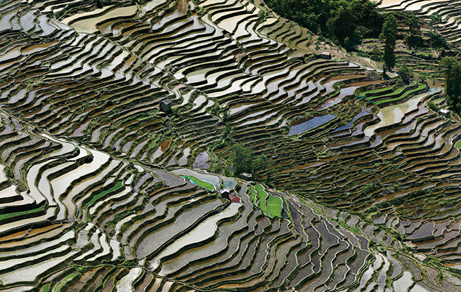

Edward Burtynsky’s perversely beautiful, large-scale photographs document the ramifications of human industry on the natural world. Throughout his pictures of strip mines, industrial refineries, homesteads, and ship-breaking yards, Burtynsky finds snatches of beauty. He fills his frames with striking color palettes and textural juxtapositions, and some compositions resemble abstract paintings. Burtynsky views his work as environmental advocacy; his photographs chronicle the cost of progress. He has also co-founded the Anthropocene Project, a multidisciplinary collaboration that captures humans’ impact on the earth. His work belongs in the collections of the National Gallery of Canada, the Museum of Modern Art, the Guggenheim Museum, the Museo Reina Sofía, the Tate, the Stedelijk Museum, and the Los Angeles County Museum of Art and has sold for six figures on the secondary market. Since the 1980s, Canadian photographer Edward Burtynsky has been taking aerial photographs of industry’s impact on Earth’s landscapes. On a 2010 expedition documenting agriculture’s effect on northern Spain, he observed how the abstracted topography seen from above reminded him of Pablo Picasso ’s Guernica (1937). “The colors and the shapes were like nothing I’d ever seen before,” he told Time magazine. Like Picasso’s 1937 masterpiece, Burtynsky’s arresting large-scale images of the scarred Earth inspire both awe and devastation. By providing a bird’s-eye view, he reveals a terraformed planet. This macro-level understanding of our impact is paradigm-shifting, fundamentally changing the way we perceive the impact of industries like agriculture, mining, and urbanization. Recognized for producing works that “powerfully alter the way we think about the world and our place in it,” Burtynsky was awarded with a TED Prize in 2005. In recent years, Burtynsky has collaborated with filmmakers Nicholas de Pencier and Jennifer Baichwal to create a multidisciplinary body of work for The Anthropocene Project. The initiative seeks to investigate humanity’s impact on the planet through art, film, virtual reality, augmented reality, and scientific research. In 2018, they released the documentary ANTHROPOCENE: The Human Epoch.